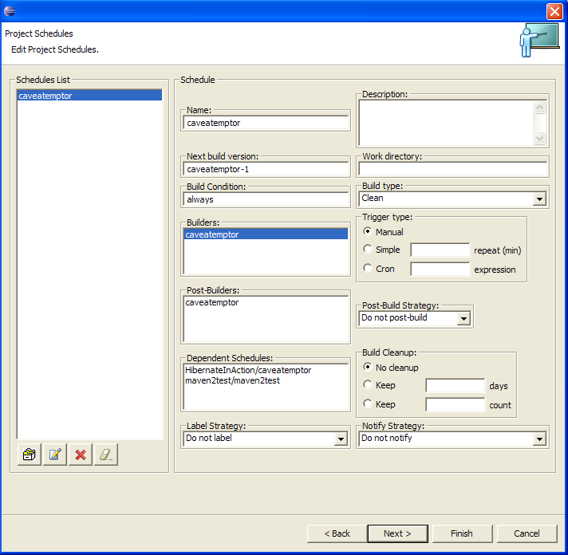

button to start Create Project Wizard and fill appropriate project data.
button to start Create Project Wizard and fill appropriate project data.
You can create a new project or edit an existing project (if connected to Luntbuild 1.3 or newer). Just click on
button to start Create Project Wizard and fill appropriate project data.
To edit and existing project, click on
 button.
button.
Here is an example of Create, Edit Project wizard:
